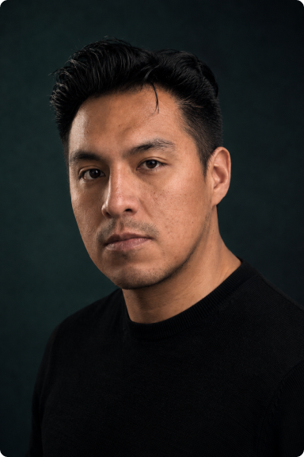

Identity verification · Fintech · B2B platforms used by operators under pressure.

I lead end-to-end — framing the problem, building the architecture, designing the system, and shipping the final UI. My work sits at the boundary between product thinking and craft, and I'm equally at home in a research conversation or a late-night animation pass.
AI sits in my process as a layer: Figma AI for component exploration, Gemini for visual concepting, and Claude for structuring information architecture and rationale. It keeps me fast through early thinking so I can spend more time on the decisions that actually need a human.
At Incode, I led design for the largest stadium identity rollout in Latin America — 770,000+ fans verified across 17 venues, sub-five-second authentication at the gate.
Along the way I noticed the product needed motion to communicate trust under pressure, but no one owned that craft. So I built it. I taught myself the toolchain, shipped the first prototypes, and grew it into a formal capability the team could rely on. That's how I tend to work: spot the gap, learn what's needed, and leave behind something the team can keep using.
I moved to Leipzig deliberately — looking for a work culture that respects boundaries and supports long-term quality. I'm freelancing selectively while I look for my next senior IC role in Europe, ideally on a product that still has hard problems left to solve.
Based in Leipzig, open to roles across Germany and Europe. Available from June 2026.
I'm currently open to Senior Product Designer opportunities in fintech, B2B SaaS, and digital identity.